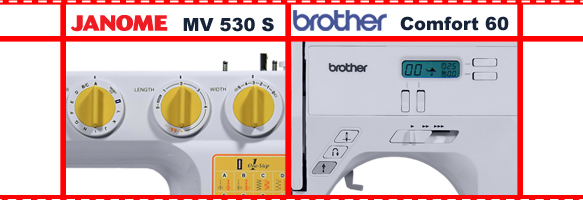

|
Приветствую всех, кто заинтересовался нашими трудами. Сегодня выбор сделан на первый взгляд весьма противоречивый. Но это только на первый взгляд, хотя эти машины и разных классов, зато они в одной ценовой категории. Две Японские фирмы, которые являются непримиримыми соперниками в производстве бытового швейного оборудования. Насколько популярны эти производители в нашем отечестве даже рассказывать не надо, а вот по традиции коснуться брендов стоит. Фирма Brother мультибрендовая компания, состоящая из трех отдельных подразделений, одно из которых занимается производством швейного оборудования. С 1934 года в городе Нагойа существует Nippon Sewing Machine Manufacturing Cо ( ныне Brother Industries Ltd) изначально занимаясь только производством швейных машин, расширился до производства и других изделий бытового и промышленного характера... Janome же исторически расширялись и развивались именно в направлении производства бытовых швейных машин. На сегодняшний момент Janome имеет три завода: Tokyo Factory(Япония),Taiwan Janome Sewing Machine Co.(Тайвань), Thai Janome Co.(Таиланд), и множество торговых представительств. Авторитет Токийцев непререкаем, что подтверждается высоким доверим многих европейских коллег, выпускающих на заводе в Тайване часть своего модельного ряда. Несмотря на то, что Brother не делает упора только на производство бытовых швейных машин, оба бренда занимают ведущие позиции в производстве швейного оборудования и высоко ценятся как специалистами, так и начинающими пользователями. Начнем с более «продвинутой» компьютеризированной модели с горизонтальным челноком, то есть Brother comfort 60E (собирается в Китае). Светодиодная подсветка поля шитья, удобная заправка нижней нити(система Drop-in), автоматический нитевдеватель, 60 швейных операций, большие длина стежка(до 5мм) и ширина зигзага(до 7мм), возможность шитья без педали (с кнопки старт/стоп), регулятор скорости, кнопка позиционирования иглы, жидкокристаллический дисплей – вот то, за что стоит обратить внимание на эту модель, да еще в таком ценовом сегменте! Из минусов видно, разве что отсутствие подсветки дисплея и малый вес… Хотя все же есть серьезный недостаток, ее узкоспециализированность (машина предназначена для легких материалов). Внешне машина приятна на глаз, чувствуется размах, тут и псевдооверлочные, и эластичные, и декоративные, и потайные, и квилтовые (квилтинг - вид рукоделия, когда пришиваются не менее трех слоев ткани, в результате чего образуется рельефный узор), рабочие и другие виды строчек, а также 5 видов петель. Не будем делать поспешных выводов и подождем испытаний. |
|  |
| Вторая наша конкурсантка самая обычная электромеханическая машина Janome MV 530 S. Конечно, удобств минимум: аскетичный внешний вид, спартанские условия заправки (отсутствует нитевдеватель), вертикальный челнок, обычные дисковые регуляторы переключений – зато надежность не вызывает сомнений, очень надежно сложенная и многофункциональна(25 швейных операций), для электромеханической машины. Умения 530-ой вполне должны устроить человека, покупающего машину для бытовых нужд, но с минимальным набором декоративных строчек. В набор операций включены рабочие (прямая, зигзаг), потайная, эластичные, псевдооверлочные, 8 декоративных строчек и петля в автоматическом режиме. Страна сборки Тайвань. |
|
Возьмем тюлевую ткань и сделаем прямую строчку. Первой выступит Janome. Ставим натяжение верхней нити на значение 3 и получаем прямую строчку, чуть сосбарен материал. Повернем регулятор натяжения еще немного в направлении 0, держа в голове, что можем, в крайнем случае, отрегулировать нижнее натяжение (винт на шпульном колпачке). Эта строчка устраивает как своей плотностью, так и прямой направленностью (нет отклонений в сторону одного стежка относительно другого).
Brother на том же натяжении ведет себя похожим образом, вот только видна елочка, присущая горизонтальному челноку. Уменьшив натяжение, получаем нормальную по плотности строчку, но наше отклонение стежков в левую сторону никуда не ушло. К минусу отнесу и невозможность регулировки нижней нити. |
|
Использовать будем джинсовый материал, начиная с двух слоев. Обе машины шьют два слоя джинсы, только вот ведут себя по-разному. В то время как mv 530 s пролетает материал без изменения поведения, Comfort 60 e после трех-четырех стежков начинает немного подстукивать в районе челночного устройства. Строчка у тайваньского Японца плотная, а вот Японец родом из Китая делает ее рыхловатой, что будет достаточно заметно на чистовом изделии. Возьмем и вдвое усложним задание. Четыре слоя джинсы. Janome справляется с поставленной задачей, с легкостью прошив и оставив после этого хорошую строчку. А вот Brother застопорился и заблокировал вал, показав на дисплее ошибку с кодом Е6, подтвердив свою репутацию белошвейки. 530 справляется с 6 и с 8 слоями джинсы, причем делает это с легкостью, с которой разгоняется спортивная машина. Дальше проводить опыты бессмысленно, так как в быту и 8 сложений не понадобится, но еще ресурс виден. |
|
Включим машины и оставим работать на 2 часа, попутно отслеживая все изменения, будь-то повышение температуры корпуса или шумности. Первые полчаса проходят при полном штиле, Janome сама по себе чуть более шумная, ну это особенность вертикального челнока. Через час изменения не значительны, немного стала постукивать 60Е, но все в пределах нормы. По прошествии полутора часов шумность машин сравнялась, Brother стал сильнее стучать. В свою очередь у Janome нагрелась крышка облицовки в районе местонахождения источника освещения, что неудивительно учитывая использования лампы накаливания. В конце нашего испытания стук Brother стал еще более сильным, что говорит о не самой большой ресурсности машины. Параллельно с тем Janome дальше нагреваться не стал и изменений в работе по шуму нет. |
Вывод: выбор между комфортом и ресурсностью, огромным количеством строчек и универсальностью в спектре прошиваемых материалов. Конечно своей эргономичностью Brother comfort 60E выгодно отличается от Janome mv530s, но в плане пошива плотных тканей и временем проведенным за работой она проигрывает. Поэтому и выбор будет зависеть от ваших планов на машину. Для быта и творческой работы на тонких и средних материалов вам подойдет 60Е. Но все же если хочется работать с более обширным разбросом тканей, то ваша машина это mv 530s.
В данной статье мы провели сравнение швейных машинок Janome MV 530 S и Brother comfort 60E. Получить информацию о сравнении других швейных машин вы можете на странице «обзоры». Сайт регулярно обновляется и дополняется новыми обзорами, не пропустите!